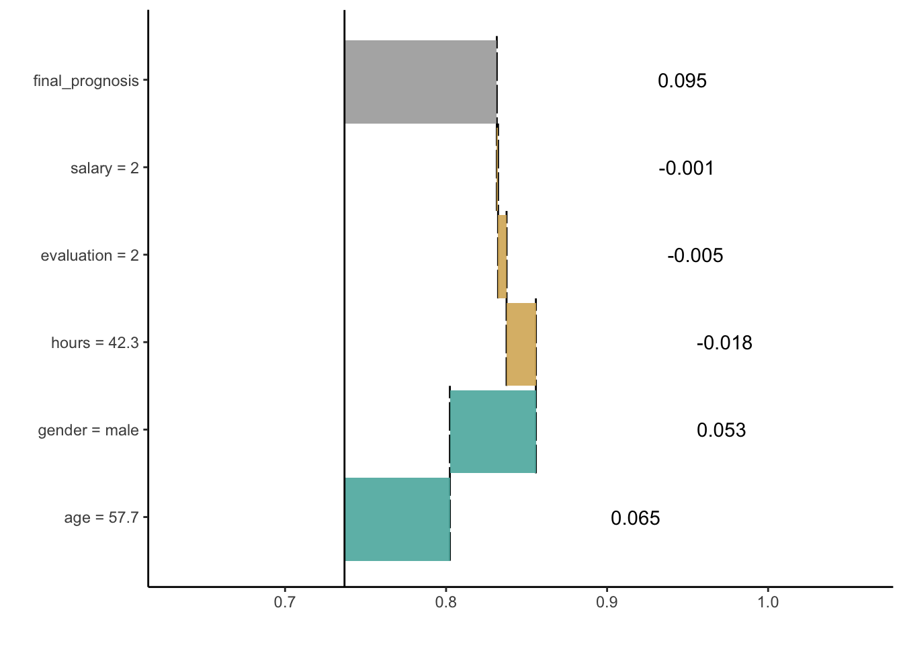
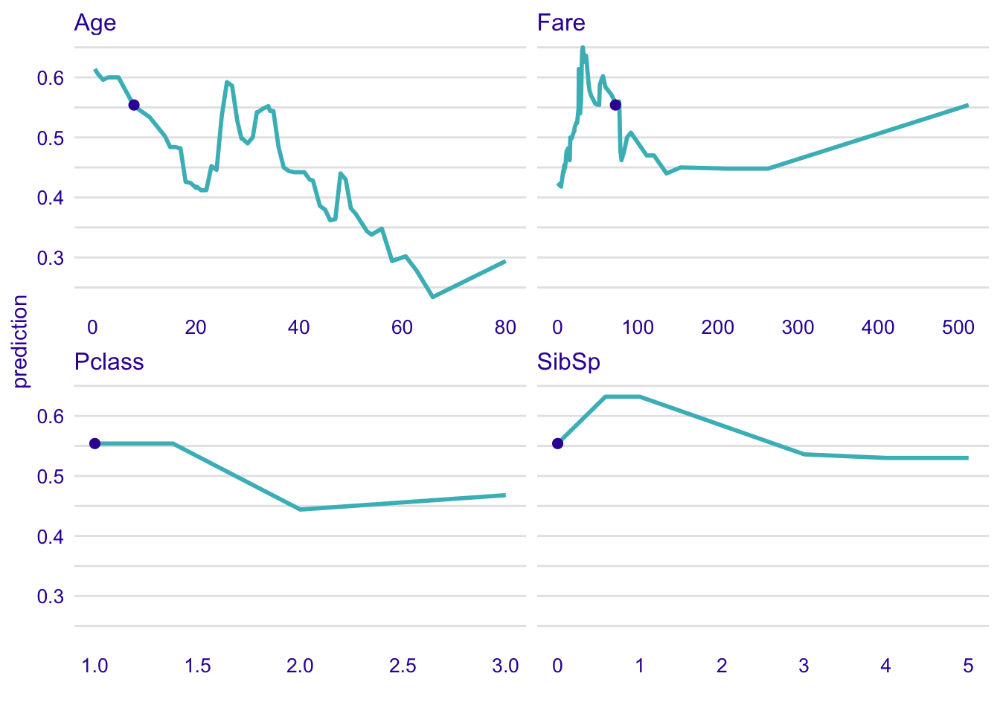

Chapter 5 Ceteris Paribus Oscillations - a tool for local variable importance
5.1 Introduction
Visual examination of Ceteris Paribus Profiles is insightful, but for a model with a large number of explanatory variables we may end up with a large number of plots which may be overwhelming. To prioritize between profiles we need a measure that would summarize the impact of a selected variable on model’s predictions. We will propose now a solution closely linked with CP profiles, but the issue is also discussed also in the next chapter.
5.2 Intuition
To assign importance to CP profiles, we can use the concept of profile oscillations. In particular, the larger influence of an explanatory variable on prediction at a particular instance, the larger the fluctuations along the corresponding CP profile. For a variable that exercises little or no influence on model prediction, the profile will be flat or will barely change. Figure 5.1 illustrates the idea behind measuring oscillations. The larger the highlighted area, the more important is the variable.
Figure 5.1: (fig:CPVIPprofiles) The value of the red are area summarizes CP oscillations and provides the average absolute deviations between the CP profile and the instance prediction. This example is for the titanic_lmer_v6 model and the titanic dataset
Figure 5.2 provides a plot of variable importance measures for different variables for the titanic_lmer_v6 and the titanic dataset. The wider the interval, the larger the CP-profile oscillations for a particular explanatory variable. Thus, Figure 5.2 indicates that the most important variable for prediction for a selected observation is age, followed by sibsp.
Figure 5.2: (fig:CPVIP1) Variable-importance measures calculated for Ceteris-paribus oscillations for observation ID: 31. This example is for the titanic_lmer_v6 model and the titanic dataset
5.3 Method
Let us formalize this concept now. Denote by \(g^j(z)\) the probability density function of the distribution of the \(j\)-th explanatory variable. The summary measure of the variable’s importance for model prediction at point \(x\), \(vip^{CP}_j(x)\), computed based on the variable’s CP profile, is defined as follows:
\[ vip^{CP}_j(x^*) = \int_{\mathcal R} |CP^{f,j,x^*}(z) - f(x^*)| g^j(z)dz=E_{X_j}[|CP^{f,j,x^*}(X_j) - f(x^*)|]. \] Thus, \(vip^{CP}_j(x^*)\) is the expected absolute deviation of the CP profile from the model prediction for \(x^*\) over the distribution of the \(j\)-th explanatory variable. A straightforward estimator of \(vip^{CP}_j(x^*)\) is
\[ \widehat{ vip^{CP}_j(x^*)} = \frac 1n \sum_{i=1}^n |CP^{f,j,x^*}(x^{*j}_i) - f(x^*)|, \] where index \(i\) goes through all observations in a dataset.
Note that the importance of an explanatory variable for instance prediction may be very different for different points \(x^*\). For example, consider model \[ f(x_1, x_2) = x_1 * x_2, \] where \(x_1\) and \(x_2\) take values in \([0,1]\). Consider prediction for an observation described by vector \(x^* = (0,1)\). In that case, the importance of \(X_1\) is larger than \(X_2\). This is because the CP profile for the first variable, given by the values of function \(f(z,1)=z\), will have oscillations, while the profile for the second variable will show no oscillation, because it is given by function \(f(0,z)=0\). Obviously, the situation is reversed for \(x^*=(1,0)\).
5.4 Pros and cons
By using oscillations of Ceteris Paribus profiles it is possible to select the most important variables for a single instance. The methodology is easy to extend to two or more variables. Oscillations are easy to interpret.
There are several issues related to the use of the CP oscillations. Two most serious are:
- if two variables are correlated, then Ceteris Paribus profiles may be misleading as they do not take correlations into account.
- local feature importance do not sum up to model prediction. In next sections we will introduce variable attribution measures that eliminate this problem.
5.5 Code snippets for R
In this section we present key features of the R package ingredients (Biecek 2019) which is a part of DALEXverse and covers all methods presented in this chapter. More details and examples can be found at https://modeloriented.github.io/ingredients/.
In this section we use a random forest (Breiman et al. 2018) model titanic_rf_v6 developed for the Titanic dataset (see Section 2.1). In particular, we deal with a binary classification problem - we want to predict the probability of survival for a selected passenger.
library("DALEX")
library("randomForest")
titanic <- na.omit(titanic)
model_titanic_rf <- randomForest(survived == "yes" ~ gender + age + class + embarked +
fare + sibsp + parch, data = titanic)
explain_titanic_rf <- explain(model = model_titanic_rf,
data = titanic[,-9],
y = titanic$survived == "yes",
label = "Random Forest v7")In order to calculate oscillations we need to first calculate Ceteris Paribus profiles for a selected observation.
Let us use the johny_d instance again.
johny_d <- data.frame(
class = factor("1st", levels = c("1st", "2nd", "3rd", "deck crew", "engineering crew",
"restaurant staff", "victualling crew")),
gender = factor("male", levels = c("female", "male")),
age = 8,
sibsp = 0,
parch = 0,
fare = 72,
embarked = factor("Southampton", levels = c("Belfast", "Cherbourg", "Queenstown", "Southampton"))
)Profiles are calculated with the ceteris_paribus() function.
library("ingredients")
library("ggplot2")
cp_titanic_rf <- ceteris_paribus(explain_titanic_rf, johny_d,
variables = c("age", "fare", "sibsp", "parch"))
plot(cp_titanic_rf) +
show_observations(cp_titanic_rf, variables = c("age", "fare", "sibsp", "parch")) +
ggtitle("Ceteris Paribus Profiles", "For the random forest model and titanic dataset")
For selected profiles we can calculate oscillations with the calculate_oscillations function.
cpo_titanic_rf <- calculate_oscillations(cp_titanic_rf)
cp_titanic_rf$`_ids_` = "Johny D"
cpo_titanic_rf## _vname_ _ids_ oscillations
## 1 age 1 0.21864350
## 4 parch 1 0.16324640
## 2 fare 1 0.07473998
## 3 sibsp 1 0.02951691The calculate_oscillations() function returns an object of the class ceteris_paribus_oscillations, which has a form of a data frame but has also overloaded plot() function.
Use it to plot local variable importance for a selected observation

It looks like for Jony D. the two most important features are age and parch. Higher age of this passenger would significantly lower the chances of survival while higher parch would increase these odds.
References
Biecek, Przemyslaw. 2019. Ingredients: Effects and Importances of Model Ingredients. https://ModelOriented.github.io/ingredients/.
Breiman, Leo, Adele Cutler, Andy Liaw, and Matthew Wiener. 2018. RandomForest: Breiman and Cutler’s Random Forests for Classification and Regression. https://CRAN.R-project.org/package=randomForest.